Edinburgh Research Explorer
Citation for published version:
Ijspeert, AJ, Nakanishi, J, Hoffmann, H, Pastor, P & Schaal, S 2013, 'Dynamical Movement Primitives: Learning Attractor Models for Motor Behaviors', Neural Computation, vol. 25, no. 2, pp. 328-373. https://doi.org/10.1162/NECO_a_00393
Digital Object Identifier (DOI):
10.1162/NECO_a_00393
Link:
Link to publication record in Edinburgh Research Explorer
Document Version:
Publisher's PDF, also known as Version of record
Published In:
Neural Computation
General rights
Copyright for the publications made accessible via the Edinburgh Research Explorer is retained by the author(s) and / or other copyright owners and it is a condition of accessing these publications that users recognise and abide by the legal requirements associated with these rights.
Take down policy
The University of Edinburgh has made every reasonable effort to ensure that Edinburgh Research Explorer content complies with UK legislation. If you believe that the public display of this file breaches copyright please contact openaccess@ed.ac.uk providing details, and we will remove access to the work immediately and investigate your claim.

Dynamical Movement Primitives: Learning Attractor Models for Motor Behaviors
Auke Jan Ijspeert
auke.ijspeert@epfl.ch
Ecole Polytechnique F´ed´erale de Lausanne, Lausanne CH-1015, Switzerland
Jun Nakanishi
jun.nakanishi@ed.ac.uk School of Informatics, University of Edinburgh, Edinburgh EH8 9AB, U.K.
Heiko Hoffmann
heikohof@usc.edu
Peter Pastor
pastorsa@usc.edu
Computer Science, Neuroscience, and Biomedical Engineering, University of Southern California, Los Angeles, CA 90089, U.S.A.
Stefan Schaal
sschaal@usc.edu
Computer Science, Neuroscience, and Biomedical Engineering, University of Southern California, Los Angeles, CA 90089, U.S.A.; Max-Planck-Institute for Intelligent Systems, T¨ubingen 72076, Germany; and ATR Computational Neuroscience Laboratories, Kyoto 619-0288, Japan
Nonlinear dynamical systems have been used in many disciplines to model complex behaviors, including biological motor control, robotics, perception, economics, traffic prediction, and neuroscience. While often the unexpected emergent behavior of nonlinear systems is the focus of investigations, it is of equal importance to create goal-directed behavior (e.g., stable locomotion from a system of coupled oscillators under perceptual guidance). Modeling goal-directed behavior with nonlinear systems is, however, rather difficult due to the parameter sensitivity of these systems, their complex phase transitions in response to subtle parameter changes, and the difficulty of analyzing and predicting their long-term behavior; intuition and time-consuming parameter tuning play a major role. This letter presents and reviews dynamical movement primitives, a line of research for modeling attractor behaviors of autonomous nonlinear dynamical systems with the help of statistical learning techniques. The essence of our approach is to start with a simple dynamical system, such as a set of linear differential equations, and transform those into a weakly nonlinear system with prescribed attractor dynamics by means of a learnable autonomous forcing term. Both point attractors and limit cycle attractors of almost arbitrary complexity can be generated. We explain the design principle of our approach and evaluate its properties in several example applications in motor control and robotics.
1 Introduction
In the wake of the development of nonlinear systems theory (Guckenheimer &Holmes, 1983; Strogatz, 1994; Scott, 2005), it has become common practice in several branches of science to model natural phenomena with systems of coupled nonlinear differential equations. Such approaches are motivated by the insight that coupling effects of nonlinear systems exhibit rich abilities for forming complex coordinated patterns without the need to explicitly plan or supervise the details of such pattern formation. Among the many different forms of nonlinear systems (e.g., high-dimensional, weakly coupled, strongly coupled, chaotic, Hamiltonian, dissipative), this letter addresses low-dimensional nonlinear systems, for example, as typically used to model phenomena of motor coordination or cognitive science (Kelso, 1995; Thelen & Smith, 1994). 1 In this domain, there are often two modeling objectives. First, a model of a baseline behavior is required, as in generating a basic pattern for bipedal locomotion or reach-and-grasp in armmovement. Such behaviors are goal oriented; the focus is less on emergent coordination phenomena and more on achieving a task objective. After this baseline model has been accomplished, the second objective is to use this model to account for more complex phenomena with the help of the coupling dynamics of nonlinear systems. For instance, a typical example is the modulation of locomotion due to resonance entrainment of the pattern generator with the dynamics of a physical body (Nakanishi et al., 2004; Hatsopoulos & Warren, 1996). Another example is the coupling between motor control and perception (Dijkstra, Schoner, Giese, & Gielen, 1994; Kelso, 1995; Swinnen et al., 2004). In order to allow investigations of such second objectives, a dynamical systems model has to be found first.
Finding an appropriate dynamical systems model for a given behavioral phenomenon is nontrivial due to the parameter sensitivity of nonlinear differential equations and their lack of analytical predictability. Thus, modeling is often left to the intuition and the trial-and-error patience of the researchers. Many impressive studies have been generated in this manner (Schoner & Kelso, 1988; Sch¨oner, 1990; Taga, Yamaguchi, & Shimizu, 1991; Schaal & Sternad, 1998; Kelso, 1995), but the lack of a generic modeling tool is unsatisfactory.
In this letter, we propose a generic modeling approach to generate multidimensional systems of weakly nonlinear differential equations to capture an observed behavior in an attractor landscape. The essence of our methodology is to transform well-understood simple attractor systems with the help of a learnable forcing function term into a desired attractor system. Both point attractor and limit cycle attractors of almost arbitrary complexity can be achieved. Multiple degrees of freedom can be coordinated with arbitrary phase relationships. Stability of the model equations can be guaranteed. Our approach also provides a metric to compare different dynamical systems in a scale-invariant and temporally invariant way.
1 With low-dimensional, we refer to systems with less than about 100 degrees of freedom.
We evaluate our approach in the domain of motor control for robotics, where desired kinematic motor behaviors will be coded in attractor landscapes and then converted into control commands with inverse dynamics controllers. Importantly, perceptual variables can be coupled back into the dynamic equations, such that complex closed-loop motor behaviors are created out of one relatively simple set of equations. Inspired by the biological concept of motor primitives (Giszter, Mussa-Ivaldi, & Bizzi, 1993; Mussa-Ivaldi, 1999), we call our system dynamical movement primitives, as we see them as building blocks that can used and modulated in real time for generating complex movements.
The following sections first introduce our modeling approach (see section 1), then, examine its theoretical properties (see section 2), and finally explore our approach in the example domain of motor control in various scenarios (see section 3). Matlab code is provided as supplemental material to allow readers to explore properties of the system. 2 Early versions of the dynamical system presented in this letter have been published elsewhere in short format (Ijspeert, Nakanishi, & Schaal, 2002b, 2003) or some review articles (Schaal, Mohajerian, & Ijspeert, 2007; Schaal, Ijspeert, & Billard, 2003). Here, we review previous work and present our system in more detail, introduce examples of spatial and temporal couplings, and discuss issues related to generalization and coordinate systems. In the end, this letter presents a comprehensive and mature account of our dynamic modeling approach with discussions of related work, which will allow readers to apply or improve research on this topic.
2 A Learnable Nonlinear Attractor Systems
Before developing our model equations, it will be useful to clarify the specific goals pursued with this model:
1. Both learnable point attractor and limit cycle attractors need to be represented. This is useful to encode both discrete (i.e., point to point) and rhythmic (periodic) trajectories. 3
2 The code can be downloaded from http://www-clmc.usc.edu/Resources/Software.
3 Note that we borrowed the terminology discrete trajectories from the motor control literature (Schaal, Sternad, Osu, & Kawato, 2004) to denote point-to-point (nonperiodic
2. The model should be an autonomous system, without explicit time dependence.
3. The model needs to be able to coordinate multidimensional dynamical systems in a stable way.
4. Learning the open parameters of the system should be as simple as possible, which essentially opts for a representation that is linear in the open parameters.
5. The systemneeds to be able to incorporate coupling terms, for example, as typically used in synchronization studies or phase resetting studies and as needed to implement closed-loop perception-action systems.
6. The system should allow real-time computation as well as arbitrary modulation of control parameters for online trajectory modulation.
7. Scale and temporal invariance would be desirable; for example, changing the amplitude or frequency of a periodic system should not affect a change in geometry of the attractor landscape.
2.1 Model Development. The basic idea of our approach is to use an analytically well-understood dynamical system with convenient stability properties and modulate it with nonlinear terms such that it achieves a desired attractor behavior (Ijspeert et al., 2003). As one of the simplest possible systems, we chose a damped spring model, 4

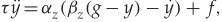
which, throughout this letter, we write in first-order notation,

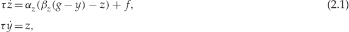
where τ is a time constant and α z and β z are positive constants. If the forcing term f = 0, these equations represent a globally stable second-order linear system with (z, y) = (0, g) as a unique point attractor. With appropriate values of α z and β z , the system can be made critically damped (with β z = α z /4) in order for y to monotonically converge toward g. Such a system implements a stable but trivial pattern generator with g as single point attractor. 5 The choice of a second-order system in equation 2.1 was motivated by our interest in applying such dynamical systems to motor control problems, which are most commonly described by second-order differential equations and require position, velocity, and acceleration information for control. In this spirit, the variables y, ˙y, ¨y would be interpreted as desired position, velocity, and acceleration for a control system, and a controller would convert these variables into motor commands, which account for nonlinearities in the dynamics (Sciavicco & Siciliano, 2000; Wolpert, 1997). Section 2.1.7 expands on the flexibilities of modeling in our approach.
or episodic) trajectories-trajectories that are not repeating themselves, as rhythmic trajectories do. This notation should not be confused with discrete dynamical systems, which denotes difference equations-those that are time discretized.
4 As will be discussed below, many other choices are possible.
5 In early work (Ijspeert et al., 2002b, 2003), the forcing term f was applied to the second ˙y equation (instead of the ˙z equation), which is analytically less favorable. See section 2.1.8.
Choosing the forcing function f to be phasic (i.e., active in a finite time window) will lead to a point attractive system, while choosing f to be periodic will generate an oscillator. Since the forcing term is chosen to be nonlinear in the state of the differential equations and since it transforms the simple dynamics of the unforced systems into a desired (weakly) nonlinear behavior, we call the dynamical system in equation 2.1 the transformation system.
2.1.1 A Point Attractor with Adjustable Attractor Landscape. In order to achieve more versatile point attractor dynamics, the forcing term f in equation 2.1 could hypothetically be chosen, for example, as

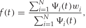
where Psi1 i are fixed basis functions and w i are adjustable weights. Representing arbitrary nonlinear functions as such a normalized linear combination of basis functions has been a well-established methodology in machine learning (Bishop, 2006) and also has similarities with the idea of population coding in models of computational neuroscience (Dayan & Abbott, 2001). The explicit time dependence of this nonlinearity, however, creates a nonautonomous dynamical system or, in the current formulation, more precisely a linear time-variant dynamical system. However, such a system does not allow straightforward coupling with other dynamical systems and the coordination of multiple degree-of-freedom in one dynamical system (e.g., as in legged locomotion; cf. section 3.2).
Thus, as a novel component, we introduce a replacement of time by means of the following first-order linear dynamics in x

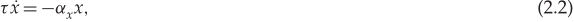
where α x is a constant. Starting from some arbitrarily chosen initial state x 0 , such as x 0 = 1, the state x converges monotonically to zero. x can thus be conceived of as a phase variable, where x = 1 would indicate the start of the time evolution and x close to zero means that the goal g has essentially been achieved. For this reason, it is important that x = 0 is a stable fixed point of these equations. We call this equation the canonical system because it models the generic behavior of our model equations, a point attractor in the given case and a limit cycle in the next section. Given that equation 2.2 is a linear differential equation, there exists a simple exponential function that relates time and the state x of this equation. However, avoiding the explicit time dependency has the advantage that we have obtained an autonomous dynamical system now, which can be modified online with additional coupling terms, as discussed in section 3.2.
With equation 2.2, we can reformulate our forcing term to become

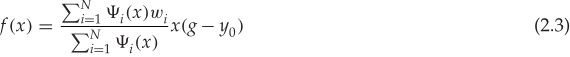
with N exponential basis functions Psi1 i (x),

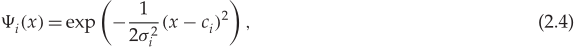
where σ i and c i are constants that determine, respectively, the width and centers of the basis functions and y 0 is the initial state y 0 = y(t = 0).
Note that equation 2.3 is modulated by both g - y 0 and x. The modulation by x means that the forcing term effectively vanishes when the goal g has been reached, an essential component in proving the stability of the attractor equations. The modulation of equation 2.3 by g- y 0 will lead to useful scaling properties of our model under a change of the movement amplitude g- y 0 , as discussed in section 2.1.4. At the moment, we assume that g ̸ = y 0 , that is, that the total displacement between the beginning and the end of a movement is never exactly zero. This assumption will be relaxed later but allows a simpler development of our model. Finally, equation 2.3 is a nonlinear function in x, which renders the complete set of differential equations of our dynamical system nonlinear (instead of being a linear timevariant system), although one could argue that this nonlinearity is benign as it vanishes at the equilibrium point.
The complete system is designed to have a unique equilibrium point at (z, y, x) = (0, g, 0). It therefore adequately serves as a basis for constructing discrete pattern generators, with y evolving toward the goal g from any initial condition. The parameters w i can be adjusted using learning algorithms (see section 2.1.6) in order to produce complex trajectories before reaching g. The canonical system x (see equation 2.2) is designed such that x serves as both an amplitude and a phase signal. The variable x monotonically and asymptotically decays to zero. It is used to localize the basis functions (i.e., as a phase signal) but also provides an amplitude signal (or a gating term) that ensures that the nonlinearity introduced by the forcing term remains transient due to asymptotical convergence of x to zero at the end of the discrete movement.
![Figure 1: Exemplary time evolution of the discrete dynamical system. The parameters w i have been adjusted to fit a fifth-order polynomial trajectory between start and goal point (g = 1.0), superimposed with a negative exponential bump. The upper plots show the desired position, velocity, and acceleration of this target trajectory with dotted lines, which largely coincide with the realized trajectories of the equations (solid lines). On the bottom right, the activation of the 20 exponential kernels comprising the forcing term is drawn as a function of time. The kernels have equal spacing in time, which corresponds to an exponential spacing in x.](assets/0073-picture.png)
Figure 1 demonstrates an exemplary time evolution of the equations. Throughout this letter, the differential equations are integrated using Euler integration with a 0.001 s time step. To start the time evolution of the equations, the goal is set to g = 1, and the canonical system state is initialized to x = 1. As indicated by the reversal of movement direction in Figure 1 (top left), the internal states and the basis function representation allow generating rather complex attractor landscapes.
Figure 2 illustrates the attractor landscape that is created by a twodimensional discrete dynamical system, which we discuss in more detail in section 2.1.5. The left column in Figure 2 shows the individual dynamical systems, which act in two orthogonal dimensions, y 1 and y 2 . The system starts at y 1 = 0, y 2 = 0, and the goal is g 1 = 1, g 2 = 1. As shown in the vector field plots of Figure 2, at every moment of time (represented by the phase variable x), there is an attractor landscape that guides the time evolution of the system until it finally ends at the goal state. These attractor properties play an important role in the development of our approach when coupling terms modulate the time evolution of the system.
2.1.2 A Limit Cycle Attractor with Adjustable Attractor Landscape. Limit cycle attractors can be modeled in a similar fashion to the point attractor system by introducing periodicity in either the canonical system or the basis functions (which corresponds to representing an oscillator in Cartesian or polar coordinates, respectively). Here we present the second option (see Ijspeert et al., 2003, for an example of the first option).
![Figure 2: Vector plot for a 2D trajectory where y 1 (top left) fits the trajectory of Figure 1 and y 2 (bottom left) fits a minimum jerk trajectory, both toward a goal g = (g 1 , g 2 ) = (1, 1). The vector plots show ( ˙z 1 , ˙z 2 ) at different values of (y 1 , y 2 ), assuming that only y 1 and y 2 have changed compared to the unperturbed trajectory (continuous line) and that x 1 , x 2 , ˙y 1 , and ˙y 2 are not perturbed. In other words, it shows only slices of the full vector plot (˙z 1 , ˙z 2 , ˙y 1 , ˙y 2 , ˙x 1 , ˙x 2 ) for clarity. The vector plots are shown for successive values of x = x 1 = x 2 from 1.0 to 0.02 (i.e., from successive steps in time). Since τ ˙ y i = z i , such a graph illustrates the instantaneous accelerations ( ¨y 1 , ¨y 2 ) of the 2D trajectory if the states (y 1 , y 2 ) were pushed somewhere else in state space. Note how the system evolves to a spring-damper model with all arrows pointing to the goal g = (1, 1) when x converges to 0.](assets/0078-picture.png)
A particularly simple choice of a canonical system for learning limit cycle attractors is a phase oscillator:

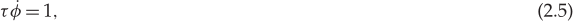
where φ ∈ [0, 2π] is the phase angle of the oscillator in polar coordinates and the amplitude of the oscillation is assumed to be r.
Similar to the discrete system, the rhythmic canonical system serves to provide both an amplitude signal (r) and a phase signal (φ) to the forcing term f in equation 2.1:

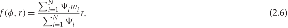

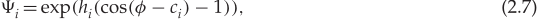
where the exponential basis functions in equation 2.7 are now von Mises basis functions, essentially gaussian-like functions that are periodic. Note that in case of the periodic forcing term, g in equation 2.1 is interpreted as an anchor point (or set point) for the oscillatory trajectory, which can be changed to accommodate any desired baseline of the oscillation. The amplitude and period of the oscillations can be modulated in real time by varying, respectively, r and τ .
Figure 3 shows an exemplary time evolution of the rhythmic pattern generator when trained with a superposition of several sine signals of different frequencies. It should be noted how quickly the pattern generator converges to the desired trajectory after starting from zero initial conditions. The movement is started simply by setting the r = 1 and τ = 1. The phase variable φ can be initialized arbitrarily: we chose φ = 0 for our example. More informed initializations are possible if such information is available from the context of a task; for example, a drumming movement would normally start with a top-down beat, and the corresponding phase value could be chosen for initialization. The complexity of attractors is restricted only by the abilities of the function approximator used to generate the forcing term, which essentially allows almost arbitrarily complex (smooth) attractors with modern function approximators.
2.1.3 Stability Properties. Stability of our dynamical systems equations can be examined on the basis that equation 2.1 is (by design) a simple second-order time-invariant linear system driven by a forcing term. The development of a stability proof follows standard arguments. The constants of equation 2.1 are assumed to be chosen such that without the forcing term, the system is critically damped. Rearranging equation 2.1 to combine the goal g and the forcing term f in one expression results in
![Figure 3: Exemplary time evolution of the rhythmic dynamical system (limit cycle behavior). The parameters w i have been adjusted to fit a trajectory y demo (t) = sin(2πt) + 0.25cos(4πt + 0.77) + 0.1sin(6πt + 3.0). The upper plots show the desired position, velocity, and acceleration with dotted lines, but these are mostly covered by the time evolutions of y, ˙y, and ¨y. The bottomplots show the phase variable and its derivative and the basis functions of the forcing term over time (20 basis functions per period).](assets/0089-picture.png)

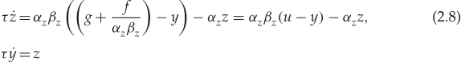
where u is a time-variant input to the linear spring-damper system. Equation 2.8 acts as a low-pass filter on u. For such linear systems, with appropriate α z and β z , for example, from critical damping as employed in our work, it is easy to prove bounded-input, bounded-output (BIBO) stability (Friedland, 1986), as the magnitude of the forcing function f is bounded by virtue that all terms of the function (i.e., basis functions, weights, and other multipliers) are bounded by design. Thus, both the discrete and rhythmic system are BIBO stable. For the discrete system, given that f decays to zero, u converges to the steady state g after a transient time, such that the system will asymptotically converge to g. After the transient time, the systemwill exponentially converge to g as only the linear spring-damper dynamics remain relevant (Slotine & Li, 1991). Thus, ensuring that our dynamical systems remain stable is a rather simple exercise of basic stability theory.
Another path to prove stability for our approach was suggested by Perk and Slotine (2006), who proved that our dynamical systems equations are two hierarchically coupled systems, each fulfilling the criterion of contraction stability (Lohmiller & Slotine, 1998). Contraction theory provides that any parallel or serial arrangement of contraction stable systems will be contraction stable too, which concludes the stability proof. This property will be useful below, where we create multiple degree-of-freedom dynamical systems, which inherit their stability proof from this contraction theory argument.
2.1.4 Invariance Properties. A useful property of modeling behaviors in a dynamical systems framework comes from the scaling properties and invariance properties that can be designed into dynamical systems. We are particularly interested in how the attractor landscape of our model changes when the parameters of the model are changed, as needed for online trajectory modulation. There are three kinds of parameters: (1) the constants on the right-hand side of the differential equations, (2) the weights w i of the forcing term, and (3) the global timescaling parameter τ and the goal parameter g, or amplitude parameter r. We assume that the first and second are kept constant for a particular behavior, but the parameters of the third can be varied as we consider them natural high-level parameters that should adjust the behavior to a particular context without changing the behavior qualitatively. Thus, formally, we wish that the attractor landscape of the dynamical systems does not change qualitatively after a change of τ , g, or r. This topic can be addressed in the framework of topological equivalence (Jackson, 1989). Mathematically, if two dynamical systems ˙x = f(x) and ˙y = g(y) are topologically equivalent, then there exists an orientation preserving homeomorphism h : [x, ˙x] → [y, ˙y] and h -1 : [y, ˙y] → [x, ˙x], where the notation → denotes a functional mapping. When scaling the movement amplitude g-y 0 in the discrete dynamical system (see equations 2.1-2.4) with a scalar mapping k, (g- y 0 ) → k(g- y 0 ), the following scaling law is an orientation-preserving homeomorphism between the original equations using g - y 0 and the scaled differential equations using k(g - y 0 ):

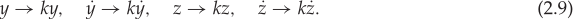
This result can be verified by simply inserting equations 2.9 into the scaled equations using the simple trick of k(g - y 0 ) + ky 0 as a goal. Similarly, when scaling r → kr in the rhythmic system (see equations 2.1 and 2.5-2.7), the same scaling law (see equation 2.9) allows proving topological equivalence (for simplicity, assume that g = 0 in equation 2.1 for the rhythmic system, which can always be achieved with a coordinate shift). For the scaling of the time constant τ → kτ , topological equivalence for both the discrete and rhythmic systems can be established trivially with

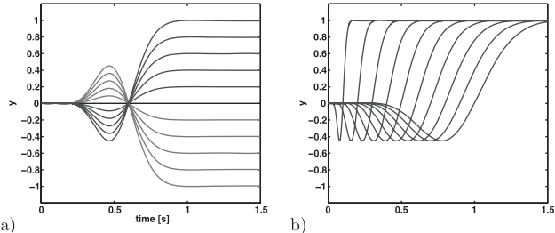

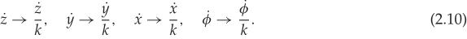
Figure 4 illustrates the spatial (see Figure 4a) and temporal (see Figure 4b) invariance using the example from Figure 1. One property that should be noted is the mirror-symmetric trajectory in Figure 4a when the goal is at a negative distance relative to the start state. We discuss the issue again in section 3.4.
Figure 5 provides an example of why and when invariance properties are useful. The blue (thin) line in all subfigures shows the same handwritten cursive letter a that was recorded with a digitizing tablet and learned by a two-dimensional discrete dynamical system. The letter starts at a StartPoint, as indicated in Figure 5a, and ends originally at the goal point Target 0 . Superimposed on all subfigures in red (thick line) is the letter a generated by the same movement primitive when the goal is shifted to Target 1 . For Figures 5a and 5b, the goal is shifted by just a small amount, while for Figures 5c and 5d, it is shifted significantly more. Importantly, for Figures 5b and 5d, the scaling term g - y 0 in equation 2.3 was left out, which destroys the invariance properties as described above. For the small shift of the goal in Figures 5a and 5b, the omission of the scaling term is qualitatively not very significant: the red letter "a" in both subfigures looks like a reasonable "a." For the large goal change in Figures 5c and 5d, however, the omission of the scaling term creates a different appearance of the letter "a," which looks almost like a letter "u." In contrast, the proper scaling in Figure 5c creates just a large letter "a," which is otherwise identical in shape to the original one. Thus, invariance properties are particularly useful when generalization properties are required that are not just confined to a very local area of the originally learned primitive. It should also be noted that a simple change of the goal state automatically creates a complex rescaling of the entire movement, without any need for explicit rescaling computations.
![Figure 5: Illustration of the significance of the invariance properties, exemplified in a two-dimensional discrete dynamical system to draw a cursive letter a. In all subfigures, the blue (thin) line denotes the letter "a" as taught from a human demonstration using a digitizing tablet. The start point for all figures is the same, while the goal is originally Target 0 , and, for the purpose of testing generalization, the goal is shifted to Target 1 . In a and b, the shift of the goal is small, while in c and d, the shift of the goal is much more significant. Subfigures a and c use equations 2.1 to 2.4, the proper formulation of the discrete dynamical system with invariance properties. As can be noted from the red (thick) lines, the generalized letter "a" is always a properly uniformly zoomed version of the original letter "a." In contrast, in subfigures b and d, the scaling term g- y 0 in equation 2.3 was left out, which destroys the invariance properties. While for a small shift of the goal in b the distortion of the letter "a" is insignificant, for a large shift of the goal in d, the distortion creates more a letter "u" than a letter "a."](assets/0102-picture.png)
In conclusion, our dynamical systems equations for point attractors and limit cycles are actually a model of a family of similar behaviors, parameterized by the timing, goal, or amplitude. Importantly, the weights w i in the forcing term remain unscaled, that is, constant under these scalings, which will allow us to use them later as means to statistically classify a behavior.
2.1.5 Extension toMultiple Degrees of Freedom. In order to obtain a system with multiple DOFs, three approaches can be pursued. First, every DOF could simply have its own complete set of dynamic equations, that is, we copy the discrete or rhythmic systems above for every DOF. While this approach is theoretically viable, it has the disadvantage that there is no coordination between the DOFs; for a longer run of the dynamical systems, for example, they may numerically diverge from each other. Moreover, disturbance rejection will normally require that in case of a disturbance of one DOF, the coordination among DOFs is not destroyed.
A second possibility would be to create coupling terms between the different DOFs, in particular, between the canonical systems, for example, as done in Taga et al. (1991). This is especially interesting for maintaining desired phase lags between DOFs during periodic movements, such as for locomotion, and for switching between different rhythmic patterns (e.g., gaits) by changing the coupling terms. However, such modeling becomes rather complex in terms of tuning coupling parameters for tight synchronization, analyzing stability, and dealing with the complex transient behavior before the system phase-locks.
A simpler multi-DOF approach is to share one canonical system among all DOFs and maintain only a separate set of transformation systems (see equation 2.1) as well as separate forcing terms for each DOF (see Figure 6). Thus, the canonical system provides the temporal coupling between DOFs, while the transformation system achieves the desired attractor dynamics for each DOF. As mentioned above, the argument of contraction stability put forward by Perk and Slotine (2006) extends to this multi-DOF approach, which is thus guaranteed to provide stable coordination among the DOFs. We have been pursuing this solution in our evaluations below. Interestingly, the canonical system becomes a central clock in this methodology, not unlike the assumed role of central pattern generators in biology (Getting, 1988; Grillner, 1981), in particular with the notion of two-level central pattern generators (McCrea & Rybak 2008), with one part of the network providing synchronized timing signals (in our case, the canonical systems) and another part of the network providing the shape of the motor patterns (the transformation systems).
Note that for different modeling purposes, different coupling approaches can be chosen. For some applications, for instance, on a humanoid robot, it might be useful to have one canonical system per limb with multiple transformation systems for controlling the joints within a limb. By adding coupling terms between canonical systems, movements of different limbs can then be synchronized with stable and adjustable phase differences.

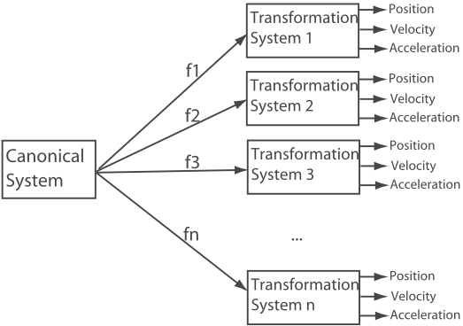
2.1.6 Learning theAttractorDynamics fromObservedBehavior. Our systems are constructed to be linear in the parameters w i , which allows applying a variety of learning algorithms to fit the w i . In this letter, we focus on a supervised learning framework. Of course, many optimization algorithms could be used too if only information from a cost function is available.
We assume that a desired behavior is given by one or multiple desired trajectories in terms of position, velocity, and acceleration triples (y demo (t ), ˙y demo (t ), ¨y demo (t)), where t ∈ [1, . . . , P]. 6 Learning is performed in two phases: determining the high-level parameters (g, y 0 , and τ for the discrete system or g, r, and τ for the rhythmic system) and then learning the parameters w i .
For the discrete system, the parameter g is simply the position at the end of the movement, g = y demo (t = P) and, analogously, y 0 = y demo (t = 0). The parameter τ must be adjusted to the duration of the demonstration. In practice, extracting τ from a recorded trajectory may require some thresholding in order to detect the movement onset and end. For instance, a velocity threshold of 2% of the maximum velocity in the movement may be employed, and τ could be chosen as 1.05 times the duration of this thresholded trajectory piece. The factor 1.05 is to compensate for the missing tails in the beginning and the end of the trajectory due to thresholding.
6 We assume that the data triples are provided with the same time step as the integration step for solving the differential equations. If this is not the case, the data are downsampled or upsampled as needed.
For the rhythmic system, g is an anchor point that we set to the midposition of the demonstrated rhythmic trajectory g = 0.5(min t∈[1,...,P] (y demo (t )) + max t∈[1,...,P] (y demo (t))). The parameter τ is set to the period of the demonstrated rhythmic movement divided by 2π. The period must therefore be extracted beforehand using any standard signal processing (e.g., a Fourier analysis) or learning methods (Righetti, Buchli, & Ijspeert, 2006; Gams, Ijspeert, Schaal, & Lenarcic, 2009). The parameter r, which will allow us to modulate the amplitude of the oscillations (see the next section), is set, without loss of generality, to an arbitrary value of 1.0.
The learning of the parameters w i is accomplished with locally weighted regression (LWR) (Schaal & Atkeson, 1998). It should be emphasized that any other function approximator could be used as well (e.g., a mixture model, a gaussian process). LWR was chosen due to its very fast one-shot learning procedure and the fact that individual kernels learn independent of each other, which will be a key component to achieve a stable parameterization that can be used for movement recognition in the evaluations (see section 3.3).
For formulating a function approximation problem, we rearrange equation 2.1 as

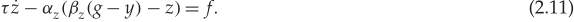
Inserting the information from the demonstrated trajectory in the left-hand side of this equation, we obtain

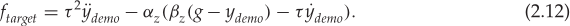
Thus, we have obtained a function approximation problem where the parameters of f are to be adjusted such that f is as close as possible to f target .
Locally weighted regression finds for each kernel function Psi1 i in f the corresponding w i , which minimizes the locally weighted quadratic error criterion,

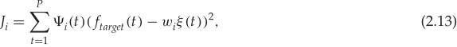
where ξ (t ) = x(t )(g - y 0 ) for the discrete system and ξ (t ) = r for the rhythmic system. This is a weighted linear regression problem, which has the solution

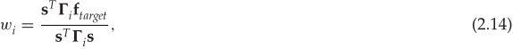
where

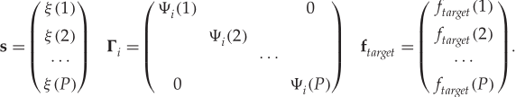
These equations are easy to implement. It should be noted that if multiple demonstrations of a trajectory exist, even at different scales and timing, they can be averaged together in the above locally weighted regression after the f target information for every trajectory at every time step has been obtained. This averaging is possible due to the invariance properties mentioned above. Naturally, locally weighted regression also provides confidence intervals on all the regression variables (Schaal & Atkeson, 1994, 1998), which can be used to statistically assess the quality of the regression.
The regression performed with equation 2.14 corresponds to what we will call a batch regression. Alternatively, we can also perform an incremental regression. Indeed, the minimization of the cost function J i can be performed incrementally, while the target data points f target (t) come in. For this, we use recursive least squares with a forgetting factor of λ (Schaal & Atkeson, 1998) to determine the parameters w i .
Figures 1 and 3 illustrate the results of the fitting of discrete and rhythmic trajectories. The demonstrated (dotted lines) and fitted (solid lines) trajectories are almost perfectly superposed.
2.1.7 DesignPrinciple. Indevelopingourmodel equations,wemade specific choices for the canonical systems, the nonlinear function approximator, and the transformation system, which is driven by the forcing term. But it is important to point out that it is the design principle of our approach that seems to be the most important, and less the particular equations that we chose for our realization. As sketched in Figure 7, there are three main ingredients in our approach. The canonical system is a simple (or wellunderstood) dynamical system that generates a behavioral phase variable, which is our replacement for explicit timing. Either point attractive or periodic canonical system can be used, depending on whether discrete or rhythmic behavior is to be generated or modeled. For instance, while we chose a simple first-order linear system as a canonical system for discrete movement, it is easily possible to choose a second-order system instead (see Ijspeert et al., 2003) or even nonlinear equations. Similarly, the rhythmic canonical system in our case was a phase oscillator, but a van der Pol oscillator, Duffing oscillator (Strogatz, 1994), or any other oscillatory system could be a useful alternative choice. For instance, if the transient behavior of a rhythmic system from a rest state to an oscillatory behavior would be of interest, using a canonical oscillator that has a Hopf bifurcation could be beneficial.

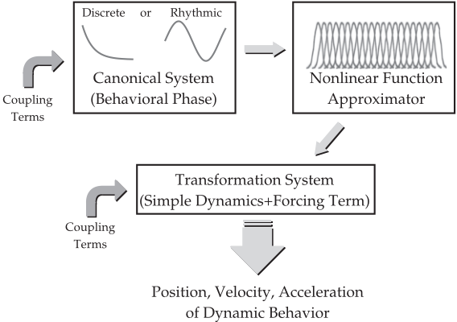
With the input from the canonical system, the nonlinear function approximator generates a forcing term. As mentioned before, any choice of function approximator is possible (Bishop, 2006).
Finally, the transformation system should be a dynamical system that is easily analyzed and manipulated when excited with a forcing term. We used a critically damped linear spring system, but other systems, like higherorder or lower-order dynamical systems are equally possible. This choice is partially guided by which level of derivatives the output behavior of the entire dynamical system should have.
All systems together should fulfill the principle of structural equivalence, should be autonomous, and should have easily analyzable stability properties. Obviously a large variety of model equations can be generated, tailored for different contexts. We address the coupling terms in Figure 7 in section 3.2.
2.1.8 Variations. Given the general design principle from the previous section, we briefly discuss some variations of our approach that have been useful in some applications.
When switching the goal g to a new value, equation 2.1 generates a discontinuous jump in the acceleration ¨y. This can be avoided by filtering the goal change with a simple first-order differential equation:

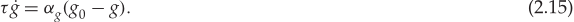
In this formulation, g 0 is the discontinuous goal change, while g is now a continuous variable. This modification does not affect the scaling properties and stability properties of the system and is easily incorporated in the learning algorithm with LWR.
It is also possible to enforce that the forcing term f cannot create a discontinuity in acceleration. For this purpose, it is useful to work with a second-order canonical system (instead of equation 2.2),

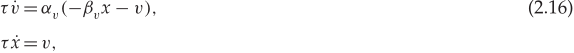
whose constants are chosen to be critically damped (see Ijspeert et al., 2003, for an example). The forcing term is reformulated as

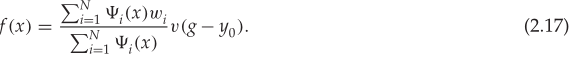
Note that in contrast to equation 2.3, the multiplication on the right-hand side has v instead of x. v starts at zero at moment onset and returns to zero at the end of the movement, such that the forcing term vanishes at both movement end and beginning. The danger of a discontinuous initial acceleration is thus avoided.
An interesting problem arises when the start point y 0 and goal g coincide. As can be seen in equation 2.3, the forcing term would always be zero in this case. This problem can be circumvented by defining the forcing term as

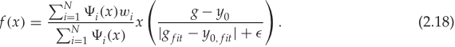
g fit and y 0, f it denote the goal and start point used to fit the weights of the nonlinear function. Thus, during fitting, this quotient is always equal to +1 or -1, such that the forcing term is guaranteed to be active. The numerically very small positive constant ϵ avoids dividing by zero. There is, however, a numerical danger that after learning, a new goal different from y 0 could create a huge magnification of the originally learned trajectory. For instance, if during learning we had g f it - y 0, f it = 0, and ϵ = 0.0001, a change of the goal offset to the start position of g - y 0 = 0.01 would create a multiplier of 100 in equation 2.18. While theoretically fine, such a magnification may be practically inappropriate. A way out is to modify the forcing term to use the maximal amplitude of a trajectory as scaling term, A = max (y) - min (y):

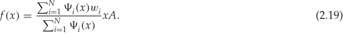
In this variant, the goal g becomes decoupled from the amplitude A, and both variables can be set independently. While it is easy to lose the strict property of structural equivalence in this way, it may be practically more appropriate for certain applications. Hoffmann, Pastor, Park, and Schaal (2009) suggested a similar approach.
For the rhythmic system, equation 2.15 is equally useful as for the discrete system if the midpoint of the oscillation is supposed to be changed during the run of the dynamical systems and a discontinuity is to be avoided. Similarly, the amplitude of the oscillation can be changed with a smooth dynamics equation,

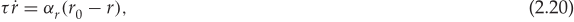
such that a discontinuous change in r 0 creates a smooth change in r. Another useful addition could be to make the input vector to the forcing term in equation 2.6 two-dimensional:

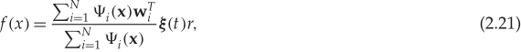

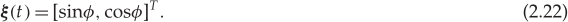
This input vector is composed of first-order Fourier terms, which exploits our knowledge that the rhythmic systemmust be periodic. 7 Simple oscillations are easier to fit with this variant, while for more complex oscillations, numerically we could not see an advantage in our experiments. For this twodimensional formulation, the weighted regression in equation 2.14 needs to become a two-dimensional weighted regression, which requires a matrix inversion instead of the simple division. This is an insignificant change, of course.
7 This input vector was used in Ijspeert et al. (2003).
2.1.9 Summary. Table 1 summarizes the key equations of our model. Given the previous sections, the equations should be self-explanatory. The only special component is the initialization of h i for the discrete system, which generates equal spacing in time t by using the analytical solution of equation 2.2 to compute the corresponding spacing in x. In the following section, we provide a variety of evaluations of our suggested approach to learning attractor systems models.
3 Evaluations
In the next sections, we present and review several experimental evaluations of applying our approach to learning attractor systems in the domain of motor control, using both simulation and robotic studies. The evaluations are intended to demonstrate the properties of our methodology, but also the domain-specific choices that need to be made. We will discuss imitation learning of discrete and rhythmic movement, online modulation with the help of coupling terms, synchronization and entrainment phenomena, and movement recognition based on a motor generation framework.
3.1 Imitation Learning. Imitation learning (Schaal, 1999) is simply an application of supervised learning given in section 2.1.6. Ijspeert et al. (2003) and Ijspeert, Nakanishi, and Schaal (2002a) demonsrated imitation learning with a 30 degrees-of-freedom (DOFs) humanoid robot (Atkeson et al., 2000) for performing a tennis forehand, a tennis backhand, and rhythmic drumming movements. Importantly, these tasks required the coordination and phase locking of 30 DOFs, which was easily and naturally accomplished in our approach. The imitated movement was represented in joint angles of the robot or Cartesian coordinates of an end effector. Indeed, only kinematic variables are observable in imitation learning. Thus, our dynamical systems represented kinematic movement plans-accelerations as a function of position and velocity. The robot was equipped with a controller (a feedback PD controller and a feedforward inverse dynamics controller) that could accurately track the kinematic plans (i.e., generate the torques necessary to follow a particular joint angle trajectory, given in terms of desired positions, velocities, and accelerations). Movies illustrating these results can be viewed at http://biorob.epfl.ch/dmps.
There are numerous other ways to accomplish imitation learning. In robotics, one of the most common classic methods to represent movement plans is by means of third-order or fifth-order splines, which could be equally applied to the learning from demonstration approach in this section. For instance, Wada and Kawato (2004) presented an elegant algorithm that recursively fits a demonstrated trajectory with a growing number of spline nodes until an accuracy criterion is reached. However, splines are nonautonomous representations with no attractor properties, not dynamical systems. Thus, while splines are effective for imitation learning, they the table are used in this letter.

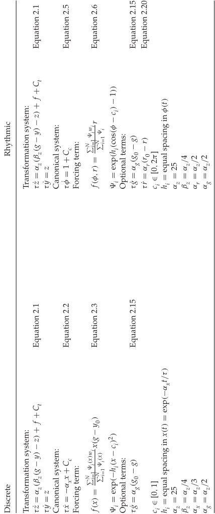
Recognized table text (check against the image)
Discrete Rhythmic Transformation system: Transformation system: τ ˙z = α z (β z (g- y) - z) + f +C t Equation 2.1 τ ˙z = α z (β z (g- y) - z) + f +C t Equation 2.1 τ ˙y = z τ ˙y = z Canonical system: Canonical system: τ ˙x = -α x x + C c Equation 2.2 τ ˙ φ = 1 +C c Equation 2.5 Forcing term: Forcing term: f (x) = ∑N i=1 Psi1 i (x)w i ∑N i=1 Psi1 i (x) x(g-y 0 ) Equation 2.3 f (φ, r) = ∑N i=1 Psi1 i w i ∑N i=1 Psi1 i r Equation 2.6 Psi1 i = exp(-h i (x - c i ) 2 ) Psi1 i = exp(h i (cos(φ - c i ) - 1)) Optional terms: Optional terms: τ ˙g = α g (g 0 - g) Equation 2.15 τ ˙g = α g (g 0 - g) Equation 2.15 τ ˙ r = α r (r 0 - r) Equation 2.20 c i ∈ [0, 1] c i ∈ [0, 2π] h i = equal spacing in x(t) = exp(-α x t/τ ) h i = equal spacing in φ(t) α z = 25 α z = 25 β z = α z /4 β z = α z /4 α x = α z /3 α r = α z /2 α g = α z /2 α g = α z /2 |
Discrete
Rhythmic
Transformation system:
Transformation system:
τ
˙z = α z (β z (g- y) - z) + f +C t
Equation 2.1
τ
˙z = α z (β z (g- y) - z) + f +C t
Equation 2.1
τ
˙y = z
τ
˙y = z
Canonical system:
Canonical system:
τ
˙x = -α x x + C c
Equation 2.2
τ
˙
φ = 1 +C c
Equation 2.5
Forcing term:
Forcing term:
f (x) =
∑N
i=1 Psi1 i (x)w i
∑N
i=1 Psi1 i (x) x(g-y 0 )
Equation 2.3
f (φ, r) =
∑N
i=1 Psi1 i w i
∑N
i=1 Psi1 i
r
Equation 2.6
Psi1 i = exp(-h i (x - c i ) 2 )
Psi1 i = exp(h i (cos(φ - c i ) - 1))
Optional terms:
Optional terms:
τ
˙g = α g (g 0
- g)
Equation 2.15
τ
˙g = α g (g 0
- g)
Equation 2.15
τ
˙
r = α r (r 0
- r)
Equation 2.20
c i ∈ [0, 1]
c i ∈ [0, 2π]
h i = equal spacing in x(t) = exp(-α x t/τ )
h i = equal spacing in φ(t)
α z = 25
α z = 25
β z = α z /4
β z = α z /4
α x = α z /3
α r = α z /2
α g = α z /2
α g = α z /2
Notes: The high-level design parameters of the discrete system are τ , the temporal scaling factor, and g, the goal position. The design parameters of the rhythmic system are g, the baseline of the oscillation; τ , the period divided by 2π; and r, the amplitude of oscillations. The terms C t and C c are coupling terms that are application dependent and explained in section 3.2. The parameters w i are fitted to a demonstrated trajectory using locally weighted learning. The parameters α z , β z , α x , α r , α g , h i , and c i are positive constants. Unless stated otherwise, the values at the bottom of
would not allow online modulation properties as presented in section 3.2. Rescaling the splines in space and time for generalization is possible but requires an explicit recomputing of the spline nodes.
Another alternative to fitting a dynamical system to observed data was presented by Khansari-zadeh and Billard (2010), who used a mixture model approach to estimate the entire attractor landscape of a movement skill from several sample trajectories. To ensure stability of the dynamical system toward an attractor point, a constraint optimization problem has to be solved in a nonconvex optimization landscape. This approach is different from ours in that it creates the attractor landscape in the state-space of the observed data, while our approach creates the attractor landscape in the phase space of the canonical system. The latter is low dimensional even for a high-DOF system. A state-space mixture model for our humanoid robot above would require a 60-dimension state space and thus would create computational and numerical problems. However, state-space models can represent much more complex attractor landscapes, with different realizations of a movement in different parts of the state-space. Our approach creates inherently stereotypical movements to the goal, no matter where the movements starts. Thus, the state-space approach to fitting a dynamical systems appears to pursue a quite different set of goals than our trajectory-based approach does.
3.2 Online Modulation of the Dynamical Systems. One goal of modeling with dynamical systems is to use the ability of coupling phenomena to account for complex behavior. Imitation learning from the previous section demonstrated how to initialize dynamical systems models with learning from demonstration. In this section, we discuss different methods for how dynamical system models can be modulated online to take dynamic events from the environment into account. Those online modulations are among the most important properties offered by a dynamical systems approach, and these properties cannot easily be replicated without the attractor properties of our proposed framework.
3.2.1 Spatial Coupling. In Figure 7, we already included the possibility of coupling terms for our dynamical systems model. Coupling terms can affect either the transformation system or the canonical system, or both systems. In this section, we address a coupling term in the transformation system only, which will primarily affect the spatial evolution (y, ˙y, ¨y) and less the temporal evolution, which is more anchored in the canonical system. Practically, we add a coupling term C t to equation 2.1 to become

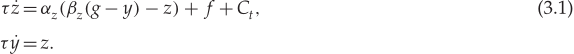
It should be noted that a prudent choice of the coupling term is critical and often needs to be specialized for different objectives. The design of coupling terms is a research topic by itself. A typical example from the domain of motor control is obstacle avoidance with the help of potential fields (Khatib, 1986; Koditschek, 1987; Rimon & Koditschek, 1992). Here, obstacles are modeled as repelling potential fields that are designed to automatically push a control system to circumnavigate them in an online reactive way instead of deliberative preplanning. Such reactive behavior assumes that obstacles may appear in an unforeseen and sudden way, such that preplanning is not possible or useful.
Fajen and Warren (2003) suggested a model for human obstacle avoidance that is nicely suited to demonstrate the power of coupling terms in our approach (Hoffmann et al., 2009). We start with a 3 degree-of-freedom (DOF) discrete movement system that models point-to-point reaching in a 3D Cartesian space. We denote the 3D position vector of the 3 DOF discrete dynamical system by y = [y 1 y 2 y 3 ] T , with ˙y as the corresponding velocity vector. The objective of a movement is to generate a reaching movement from any start state to a goal state g = [g 1 g 2 g 3 ] T . The discrete dynamical system is initialized with a minimum jerk movement (Flash & Hogan, 1985), which is frequently used as an approximate model of smooth human movement. On the way to the goal state, an obstacle is positioned at o = [o 1 o 2 o 3 ] T andneeds to be avoided. Asuitable coupling term C t = [C t,1 C t,2 C t,3 ] T for obstacle avoidance can be formulated as

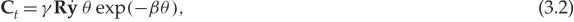
where

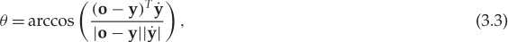

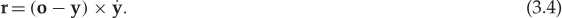
The angle θ is interpreted as the angle between the velocity vector ˙y and the difference vector (o - y) between the current position and the obstacle. The vector r is the vector that is perpendicular to the plane spanned by ˙y and (o-y), and serves to define a rotation matrix R, which causes a rotation of 90 degrees about r (Sciavicco & Siciliano, 2000). Intuitively, the coupling term adds a movement perpendicular to the current movement direction as a function of the distance vector to the obstacle (see Hoffmann et al., 2009, for more details). The constants are chosen to γ = 1000 and β = 20/π.
Figure 8 illustrates the behavior that the obstacle-avoidance coupling term generates for various trajectories starting from different initial position around the origin y = [0 0 0] T but ending at the same goal state g = [1 1 1] T . Depending on the start position, the coupling term creates more or less curved movements around the obstacle at o = [0.5 0.5 0.5] T . The behavior looks intuitively natural, which is not surprising as it was derived from human obstacle-avoidance behavior (Fajen & Warren, 2003).
![Figure 8: Illustration of obstacle avoidance with a coupling term. The obstacle is the large (red) sphere in the center of the plot. Various trajectories are shown, starting from different start positions and ending at the sphere labeled "goal." Also shown is the nominal trajectory (green) that the discrete dynamical system creates when the obstacle is not present: it passes right through the sphere. Trajectories starting at points where the direct line to the goal does not intersect with the obstacle are only minimally curved around the obstacle, while other trajectories show strongly curved paths around the obstacle.](assets/0246-picture.png)
A more complex example of spatial coupling is given in Figure 9. Using imitation learning, a placing behavior of a cup on a target was coded in a discrete dynamical system for a 3D end effector movement of the robot, a Sarcos Slave 7 DOF robot arm. The first row of images shows the unperturbed behaviors. In the second row, the (green) target is suddenly moved to the right while the robot has already begun moving. This modification corresponds to a change of the goal parameter g. The third row of images demonstrates an avoidance behavior based on equation 3.2, when the blue ball comes too close to the robot's movement. We emphasize that one single discrete dynamical system created all these different behaviors; there was no need for complex abortion of the ongoing movement or replanning. More details can be found in Pastor, Hoffmann, Asfour, and Schaal (2009).
3.2.2 Temporal Coupling. Bymodulating the canonical system, one can influence the temporal evolution of our dynamical systems without affecting Orignal Online Adaptation the spatial pattern generated by the transformation system. For instance, a coupling term can be added similarly as in the previous section, changing equation 2.2 to

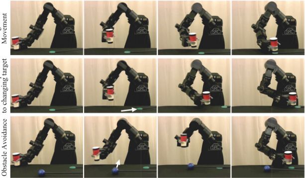

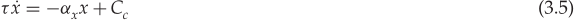
or equation 2.5 in the rhythmic system to

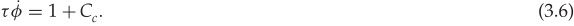
A typical example is phase coupling between two oscillators (Sternad, Amazeen, & Turvey, 1996; Matthews, Mirollo, & Strogatz, 1991), which is often accomplished by a coupling term C c = α c (φ ext -φ). Here φ ext is the phase of another oscillator, and the coupling term with strength α c will force the rhythmic canonical system into phase locking with this oscillator.
Instead of just phase-based synchronization, it is also possible to model adaptation of frequency for synchronization at a specific phase relationship (Nakanishi et al., 2004; Pongas, Billard, & Schaal, 2005). For instance, drumming at the beat of music requires such an adaptation. For this purpose, the rhythmic canonical system can be reformulated as

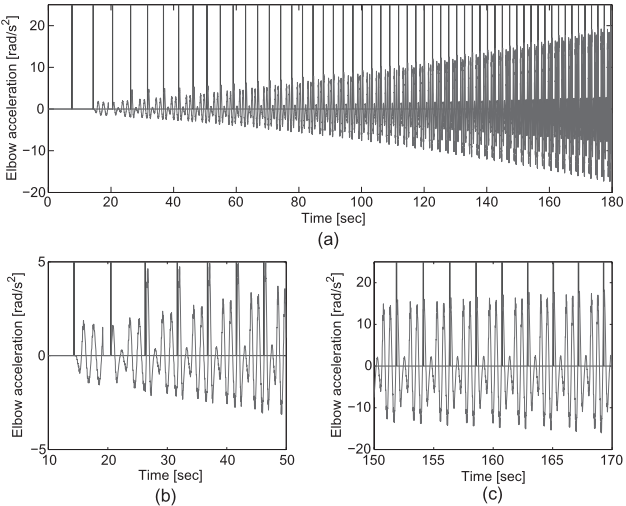

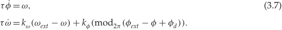
In this model, the frequency ω of the canonical system becomes adaptive through the differential equation ˙ ω. An external signal with frequency ω ext and phase angle φ ext is used to synchronize the canonical systemwith the external oscillation and to ensure that the final phase relationship is phaselocked at φ d . k ω and k φ are positive scalars that determine the adaptation rate.
Figure 10 illustrates this approach for a robot drumming example. A rhythmic 7 DOF dynamical system was initialized with a drumming pattern that consisted of one slow drumbeat followed by two quick ones (Pongas et al., 2005). An external metronome generated the beat of a rhythm to which the slow drumbeat of the robot was to synchronize. In the beginning, the robots started from immobility (ω = 0). Within two beats (the time needed to extract the frequency from the acoustic signal), perfect synchronization and phase locking is achieved with a 0.15 Hz signal-very rapid synchronization. Afterward, we had the external metronome pace increase frequency slowly to 0.5 Hz to demonstrate the continuous adaptation ability of the oscillator. Figure 10 shows the elbow DOF angular acceleration of the drumming pattern, which has the most significant contribution to the whole arm movement. As can be seen, with increasing frequency, the overall acceleration amplitude of the pattern changes but not the qualitative waveform. This property is due to the invariance properties of the dynamical systems. All other DOFs of the arm demonstrate the same behavior and are equally phase-locked to the beat of the metronome.
3.2.3 Temporal andSpatial Coupling. In this section,we illustratehowboth temporal and spatial coupling can be used together to model disturbance rejection, a property that is inherent in attractor systems. For this purpose, we assume a simple control system:

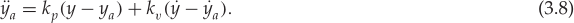
Here, the position y and velocity ˙y of the 1 DOF discrete dynamical system drive the time evolution of y a , which can be interpreted as the position of a simple point mass-controlled by a proportional-derivative controller with gains k p and k v . We use the dynamics from Figure 1 to generate the input y, ˙y. At time t = 0.35 s, the point mass is suddenly blocked from any further motion and released again at t = 0.9 s. Thus, for t ∈ [0.35 s, 0.9 s] we have y a = const, ˙y a = ¨y a = 0. Without coupling terms, the dynamical system would just continue its time evolution, regardless of what happens to the point mass. For a practical control system, this behavior is undesirable as the desired trajectory y can move away significantly from the current state y a , such that on release of the mass, it would create a dangerously large motor command and jump to catch up with the desired target.
To counter this behavior, we introduce the coupling terms

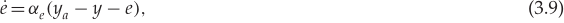

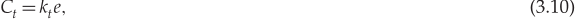

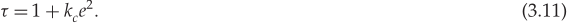
The first equation is just a low-pass filter of the tracking error e = y a - y. This error is used as an additive coupling term in the transformation system, which hinders the state y to evolve too far away from y a . Equation 3.11 affects the time constant τ of all differential equations of the dynamical system, that is, both the canonical and the transformation systems. This modification of the time constant slows the temporal evolution of the dynamics in case of a significant tracking error. The constants are chosen to be k p = 1000, k v = 125, α e = 5, k t = 1000, k c = 10,000. It should be noted that many other coupling terms could be created to achieve similar behavior and that our realization is just a simple and intuitive design of such a coupling term.
![Figure 11: Subjecting the discrete dynamical systemfromFigure 1 to "holding" perturbation. At time t = 0.35 s, the actual movement system is blocked from its time evolution: its velocity and acceleration are zero, and its position (dashdot line in the top-left figure) remains constant until t = 0.9 s (see the shaded area). Due to the coupling terms, the time evolution of the dynamical system decays to zero and resumes after the actual system is released. For comparison, the unperturbed time evolution of the dynamics is shown in a dashed line. Essentially the perturbation simply delays the time evolution of the dynamical system without any large motor commands leading to possible harm.](assets/0270-picture.png)
Figure 11 illustrates the behavior due to these coupling terms in comparison to the unperturbed (dashed line) time evolution of the dynamics. The top-left plot of Figure 11 also shows with the dash-dot line the position y a . During the holding time period, the entire dynamics comes almost to a stop and then smoothly resumes after the release of the mass roughly with the same behavior as where the system had left off; the system continues with the negative dip before moving toward the goal. Without the coupling terms, y would already have evolved all the way to the goal position, and the error between y a and y would have grown very large. These types of couplings have been used successfully with the humanoid robot (see the video at http://biorob.epfl.ch/dmps). It should also be emphasized that many different behaviors could be generated with other coupling terms, and it is really up to the modeler to decide which behavioral properties to realize with a particular realization of coupling terms.
3.3 Movement Recognition. Due to the temporal and spatial invariance of our representation, an interesting aspect of our dynamical systems approach arises as trajectories that are topologically similar tend to be fit by similar parameters w i . This property opens the possibility of using our representation for movement recognition, for example, in order to recognize the intent, the style, or the sequential decomposition of movement. 8 It should be noted that such recognition is about spatiotemporal patterns, not just spatial patterns, as in typical character recognition research. For instance, copying the signature of another person is usually done with the aim of generating the same spatial pattern on paper. The temporal pattern, however, is usually vastly different during the copying process. This temporal difference would manifest itself in a change of w i in our representation, even if the spatial copy were perfect. Thus, the following example should not be confused with standard spatial character recognition.
To illustrate this idea, we carried out a simple task of fitting trajectories performed by a human user when drawing two-dimensional single-stroke patterns. The 26 letters of the Graffiti alphabet used in hand-held computers were chosen. These characters are drawn in a single stroke and are fed as a two-dimensional trajectory (y 1 (t), y 2 (t)) to be fitted by a 2 DOF discrete dynamical system. Five examples of each character were presented (see Figure 12 for some examples).
Similarities between two characters a and b can be measured by computing the correlation between their parameter vectors. The correlation corresponds to w T a w b |w a ||w b | , where w a and w b are the parameter vectors of characters a and b. These vectors are the union-i.e., w a = [w y 1 a ,w y 2 a ]-of the parameter vectors for the y 1 (t) and y 2 (t) trajectories, respectively, w y 1 a and w y 2 a . It shouldbepointedout that using theLWR functionapproximator (see section 2.1.6) is particularly advantageous in this application. LWR learns each coefficient of w locally using nearest-neighbor interpolation, unlike mixture models or gaussian process regression (Schaal & Atkeson, 1998), which are global function approximators. Thus, for instance, a variation at the end of a movement will not affect the parameter values at the beginning of a movement, which creates a very robust parameter representation, suitable for the correlation-based classification above.
Figure 13 shows the correlations of all 130 instantiations of the characters. The correlation indicates similarity in the acceleration profiles. As illustrated by high correlation values in the diagonal of the correlation matrix, the correlations between instances of the same character tend to be systematically higher than correlations between instances of different characters. These similarities in weight space can therefore serve as a basis for recognizing demonstrated movements by fitting them and comparing the fitted parameters w i with those of previously learned characters in memory. In this example, a simple one-nearest-neighbor classifier in weight space would serve the purpose. More sophisticated classifiers like support vector machines would be possible too but are beyond the scope of this letter. Using such a classifier within the whole alphabet (5 instances of each letter), we obtained a 87% recognition rate (113 out of the 130 instances had a highest correlation with an instance of the same letter). The wrongly labeled instances are sometimes similar-looking letters (e.g., a Q being recognized as a G), but sometimes significantly different (e.g., a J being recognized as an S). The latter cases usually mean that the correlation coefficient is rather low, such that the nearest neighbor is chosen by chance rather than due to a significant correlation coefficient. Such cases could be excluded by more sophisticated classifiers that would employ, for example, confidence levels in decision making.
8 In recent years, significant neuroscientific research has suggested that movement recognition could be generated with a movement-generating representation (Rizzolatti & Arbib, 1998).

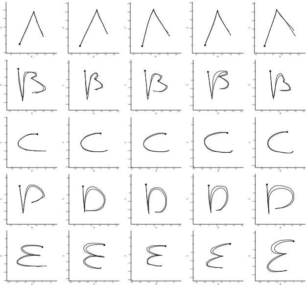

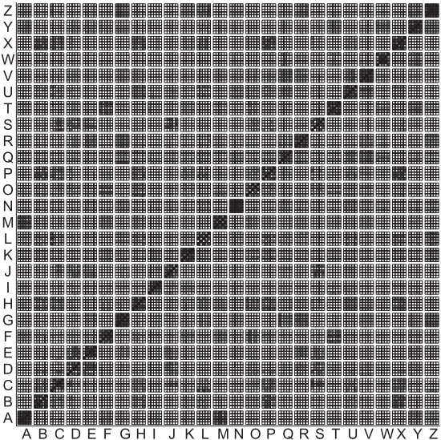
As a baseline comparison, we repeated this spatiotemporal character recognition experiment with dynamic time warping (DTW) (Sakoe & Chiba, 1987), a dynamic programming technique to compute a matching score between two arbitrary trajectories. DTW accomplished a 79% recognition rate, which is significantly lower than our dynamical systems representation. DTW is particularly well suited to match similar trajectories that have temporal variance. For changes in spatial scale, DTW is less suitable, while the invariance properties of our dynamical systems representation are built to be immune to such changes. To demonstrate this fact, we changed the scale of the five recorded instances per character by multiplying the position values of the trajectories for the first character with 1.0, the second with 1.25, the third with 1.5, the fourth with 1.75, and the fifth with 2.0. We then repeated the character recognition experiment. As expected, the results with the dynamical systems representation remained virtually identical as without scaling. For DTW, however, the recognition rate reduced to only 25%.
Further studies are required to evaluate the quality of recognition in larger training and test sets. What we wanted to demonstrate is the ability for recognition without any specific system tuning or sophisticated classification algorithm.
3.4 Generalization and Coordinate Systems. Section 2.1.4 already alluded to the invariance properties of our dynamical systems model. The invariance properties are derived from the mathematical principle of structural equivalence and thus are theoretically sound. However, these invariance properties manifest themselves quite differently as a function of different coordinate systems.
Figure 14 illustrates some of the interesting issues that can arise in generalizing a learned movement to new goal states. We used a 2 DOF discrete dynamical system to represent a movement from the origin to a goal point, where on the way to the goal, the movement makes a loop. In Figures 14a, 14b, and 14c, the original movement, which was used to fit the dynamical system, is shown in a heavy (red) line. These original movements are in the first quadrant of the coordinate systems and differ only in the orientation of the goal relative to the start; Figure 14a is at roughly a 45 degree angle, Figure 14b is at about 10 degrees, and Figure 14c is at a zero angle.
In Figures 14a and 14b, we used the formulation from Table 1 to fit the model. Then we applied the model to generate movement to six different targets, distributed with 60 degrees difference on a circle around the origin.
The generalization to new targets in Figure 14a looks, from our human intuition, reasonable. The loop gets slightly distorted for goals close to the horizontal or vertical line. Indeed, if the goal were to lie exactly on a horizontal or vertical line, the loop would collapse. Movements in the second quadrant are mirror symmetric to similar movements in the first quadrant. The same holds for the third and fourth quadrants. Between the first and third quadrants, and the second and fourth quadrants, we observe point symmetry.
In Figure 14b, we repeated the experiment of Figure 14a, just that the original movement is closer to the horizontal line. The generalization pattern looks quite different. This effect comes from the fact that the start and goal state of y 2 are rather close together, such that in equation 2.3, the term (g 2 - y 0,2 ) causes a rather large amplification of the movement in y 2 when the goal moves farther away from the origin in y 2 direction. Theoretically, from a spatial invariance point of view, there is nothing wrong with this generalization pattern, just that it does not look very intuitive to us anymore and that it would risk hitting joint angle limits.
In Figure 14c, we changed the coordinate system for representing the movement to a local coordinate system. Here, one axis of the movement is always aligned with the line from the start to the goal point. The second coordinate axis is perpendicular. Thus, as can be seen in the two plots on the right of Figure 14c, y 2 has a zero difference between start and goal coordinate, and only y 1 has a difference. Thus, we use equation 2.19 for representing y 2 . In order to generalize to new goals, the movement is generated in local coordinates and requires a subsequent coordinate transformation to rotate the trajectory to global coordinates. With this strategy, the generalization pattern in Figure 14c looks the most appealing to the human eye. Mathematically, all we did was change coordinates to represent our dynamical systems model.
![Figure 14: Generalizationof a 2DOFdiscretedynamical systemunder different choices of coordinate systems. The 2D movement is a point-to-point movement with a loop on the way to the goal. All movements start at the origin of the coordinate system and terminate at six different goal positions, distributed with 60 degree distance on a circle. The heavy (red) path in the first quadrant of the coordinate system was the originally learned movement. The generalization of this movement to six different targets is drawn with different line styles to make it easier to see the paths of these movements. The two plots on the right of each subfigure show the y 1 and y 2 trajectories of each original movement. (a) The original movement is in a benign part of the Cartesian coordinate system. (b) Again this is a Cartesian coordinate system, but the y 2 coordinate of the original movement has the start and end point of the movement within a small distance. (c) Choosing a coordinate system that has as the first coordinate the line between start and end point, and the second coordinate is perpendicular.](assets/0290-picture.png)
In conclusion, the invariance properties in our dynamical systems model are mathematically well founded, but the choice of coordinates for representing a model can make a big difference in how generalization of the dynamics systems appears. From a practical point of view, one should first carefully investigate what properties a model requires in terms of temporal and spatial invariance and then realize these properties by choosing the most appropriate variant of the dynamical systems model and the most appropriate coordinate system for modeling. 9
4 RelatedWork
As mentioned in section 1, the central goal of our work was to derive learnable attractor dynamical systems models for goal-directed behavior and to explore generalization and coupling phenomena with such systems as models for biological and technical systems. Thus, we roughly classify related work according to more biological or more technical domains. Besides general nonlinear systems theory, most related work comes from the field of biological and artificial motor control.
4.1 NeuralControl ofMovement. In thefieldof neural control ofmovement, early work on dynamical systems models was suggested by Bullock and Grossberg (1989), where the features of human point-to-point reaching movements were modeled with a point attractor system. Giszter et al. (1993) and Mussa-Ivaldi (1997, 1999) developed the idea of superposition of force fields to model wiping behaviors in the frog and also the generation of human armmovement. Kelso, Scholtz, and Schoner (1988), Sch¨oner and Kelso (1988), Sch¨oner (1990), Haken, Kelso, Fuchs, and Pandya (1990), Kelso (1995), and Sch¨oner and Santos (2001) have developed a large body of work of how to model movement phenomena with dynamical systems, emphasizing dynamic phenomena like phase transitions. Similarly, Kugler and Turvey (1987), Turvey (1990), and Sternad et al. (1996) investigated dynamic phenomena of biological movement, with a focus on rhythmic movements and distinction of order parameters and control parameters.
9 See, for instance, Pastor et al. (2009).
There is also extensive work on using coupled oscillators as models of biological behaviors, often discussed under the keyword "central pattern generators." (Ijspeert, 2008) provides an extensive review on this topic.
In general, all of these previous approaches focused their modeling on rather specific systems and required a fair amount of user intuition. While drawing inspiration from these previous projects, our work goes beyond by suggesting a general approach to modeling with attractor systems, using the same form of representations in all applications, and using machine learning to adjust the model to observed data.
One can also draw an interesting parallel of our work with the equilibrium hypothesis in neuromotor control (Flash & Sejnowski, 2001; Latash, 1993). By rearranging equation 2.1 as follows,

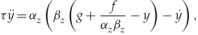
one can interpret the termg+ f α z β z as a virtual trajectory or equilibrium point trajectory. But in contrast to equilibrium point approaches, which were meant to be a simplified computation to generate motor commands out of the spring properties of the neuromuscular system, our work addresses kinematic planing dynamics, which still requires a controller to convert kinematic plans into motor commands. Gomi and Kawato (1996, 1997) provide a useful discussion on this topic.
4.2 Robotics andControlTheory. Potential fieldapproaches createvector fields according to which a movement system is supposed to move. This idea has the same spirit as dynamical systems approaches in motor control. Deriving robot controllers from potential fields has a long tradition in robotics (Khatib, 1986; Koditschek, 1987; Tsuji, Tanaka, Morasso, Sanguineti, & Kaneko, 2002; Okada, Tatani, & Nakamura, 2002; Li & Horowitz, 1999). Potential fields represent attractor landscapes, with the movement goal acting as a point attractor. Designing such potential fields for a given behavior is often a hard problem, with few analytically sound approaches (Koditschek, 1987). Due to this lack of analytical tractability, some people have suggested recurrent neural network (Paine & Tani, 2004; Jaeger & Haas, 2004) or evolutionary methods (Ijspeert, Hallam, & Willshaw, 1999; Ijspeert, 2001) as a design strategy for nonlinear dynamical systems controllers.
From a more theoretical side, B¨uhler and Koditschek (1990), Rizzi and Koditschek (1994), Burridge, Rizzi, and Koditschek (1999), and Klavins and Koditschek (2001) developed a variety of control algorithms in the context of nonlinear dynamics that could be investigated both experimentally and analytically and that demonstrated very good performance. The idea of contraction theory by Lohmiller and Slotine (1998) also offers a promising set of tools for design principles with nonlinear dynamical systems.
Our suggested approach differs from such previous work in a variety of details. In contrast to the majority of previous work, we address highdimensional dynamical systems rather than low-dimensional systems, as we work directly with families of trajectories to cover the global space. Other approaches seek global attractor landscapes out of general formulations, but it is hard to understand and manipulate the geometry of global attractors. Our trajectory-based thinking creates simpler although less flexible attractor landscapes but scales easily to higher dimensions and enables machine learning to shape the landscapes. We also develop our work more from a dynamical systems view that focuses on arbitrary vector fields, often interpreted as velocity or acceleration fields. In contrast, more control-theoretic approaches work directly with motor command generation, at the cost that motor commands do not generalize well to new situations because they are posture dependent in a robot. Our velocity or acceleration fields generalize more easily as they are purely kinematic in nature, but for robotics, we require a controller that transforms vector fields into control commands.
Probably one of the approaches that comes closest to ours is reservoir computing (Maass, Natschl¨ager, & Markram, 2002; Jaeger & Haas, 2004). Reservoir computing uses a large recurrent network of randomly connected neurons with specific readout neurons for learning nonlinear dynamics, in particular, for time-series prediction. The parameters of the network (e.g., the synaptic weights) are kept constant except for the weights to the readout neurons, which are updated using linear regression given a desired output pattern. The approach has been used for predicting time series of complex dynamical phenomena with impressive results. In principle, the approach can learn a large class of dynamical systems, including point attractor and limit cycle dynamics. The main differences with our approach is that the underlying dynamics is much more complex than ours (with several hundreds of state variables), that reservoir computing does not offer proof of stability of learned attractors, and that it is less easy to incorporate feedback terms for online trajectory modulation. Therefore, it is not yet clear yet how reservoir computing can be used for controlling a robot (but, for some interesting steps in that direction, see Joshi & Maass, 2005; Wyffels & Schrauwen, 2009).
As a final remark, there is a rich literature on using optimization approaches to generate goal-directed movement (Kawato, 1996; Todorov, 2004), also discussed in some areas of reinforcement learning (Peters & Schaal, 2008; Theodorou, Buchli, & Schaal, 2010). Optimization approaches look for some general cost functions as a unifying priniciple to generate movement behavior, usually by offline optimization. As optimization can be rather sensitive to initial and final conditions of the movement and other environment factors, optimization does not necessarily generate movement primitives (i.e., stereotypical behavior), and every change of initial or final condition usually requires running the optimization again. Optimization is also mostly done on time-indexed trajectories. Thus, optimization approaches to movement generation are inherently different from our suggested approach to generate movement primitives with generalization and coupling properties. Nevertheless, it is possible to use optimization approaches in the context of our dynamical systems model to optimize the open parameters of the model (Peters & Schaal, 2008; Theodorou et al., 2010), which creates an interesting bridge between dynamical systems approaches and optimization approaches that exploits the best of both worlds (Schaal et al., 2007).
4.3 Dynamical Movement Primitives. Our work on learnable dynamical systems originated from the desire to model elementary motor behaviors, called motor primitives, in humans and robots as attractor systems, an approach that has a long tradition in neuroscientific modeling (Kelso, 1995; Ijspeert, 2008). Initial work addressed imitation learning for robotics (Ijspeert et al., 2002a, 2002b, 2003). Subsequent investigation examined the approach for biped locomotion (Nakanishi et al., 2004), adaptive frequency modulation (Buchli, Righetti, & Ijspeert, 2006; Gams et al., 2009), reinforcement learning (Peters & Schaal, 2008; Kober & Peters, 2009), models for biological movement generation (Schaal et al., 2007; Hoffmann et al., 2009), and generating libraries of motor skills (Pastor et al., 2009; Ude, Gams, Asfour, & Morimoto, 2010). Various other projects in robotics created work that resembles our basic approach-the generation of kinematic movement primitives as attractor systems using basis function approaches to model the nonlinear dynamics (e.g., Billard & Mataric, 2001; Schaal et al., 2003; Billard, Calinon, Dillmann, & Schaal, 2008; Kulvicius, Ning, Tamosiunaite, &Worg¨otter, 2012).
A interesting variant was presented by Gribovskaya, Khansari-Zadeh, and Billard (2010) and Khansari-zadeh and Billard (2010). In this work, the authors use gaussian mixture models (GMM) to directly learn nonlinear attractor landscapes for movement primitives from demonstrated trajectories as a state-space approach; they avoid any explicit or implicit timing system like our canonical system, and they do not include stabilizing dynamics as accomplished with the spring-damper system in our transformation system equations. As an advantage, they obtain a movement primitive representation that depends on only observable states, which can be considered a direct policy learning approach, as discussed in Schaal (1999). Such a representation can learn much more complex attractor landscapes, where the attractor landscape can strongly vary throughout the state-space. As a disadvantage, the authors have to spend significant numerical effort on a nonconvex optimization problem to ensure stability of their movement primitives, they have to address learning of mixture models in potentially rather high-dimensional and ill-conditioned spaces where the number of mixture components may be hard to determine, and they require many more data throughout the state-space to represent the attractor dynamics. At this point, movement recognition and periodic motion are not addressed, and it is not entirely predictable how their movement primitives generalize in areas of the state-space that have few or no data. In essence, this approach differs in a similar way from ours as state-space-based optimal control and reinforcement learning differs from trajectory-based optimization approaches (Peters & Schaal, 2008). State-space approaches have a more powerful representation but quickly degrade in high-dimensional settings. Trajectory-based approaches work well in very high dimensions and generalize well throughout these spaces, but they have less representational power. It is really up to a particular application which properties are beneficial.
The large variety of follow-up and related approaches to our initial work on dynamical movement primitives is one of the motivations to present in this letter the theory, insights, and a refined approach to learnable dynamical systems that we hope will continue to attract even more active research in the future.
5 Conclusion
This letter presented a general design principle for learning and modeling with attractor dynamical systems for goal-directed behavior, which is particularly useful for modeling motor behaviors in robotics but also for modeling biological phenomena. Using nonlinear forcing terms that are added to well-understood dynamical systems models, we can create a rich variety of nonlinear dynamics models for both point attractive and limit cycle systems. The nonlinear forcing term can be represented as an autonomous coupling term that can be learned with standard machine learning techniques that are linear in the open parameters. We demonstrated the properties of our approach, highlighting theoretical and practical aspects. We illustrated our method in various examples from motor control.
To the best of our knowledge, the approach we have presented is the first realization of a generic learning system for (weakly) nonlinear dynamical systems that can guarantee basic stability and convergence properties of the learned nonlinear systems and that scales to high-dimensional attractor systems. Besides the particular realizations of nonlinear system models presented in this letter, we believe it is of greater importance to highlight the design principle that we employed. This design principle seems to be applicable for many other nonlinear dynamical systems models, as well as technical applications and computational neuroscience.
Several points of our approach require highlighting. First, the proposed system of equations is not very complicated. We primarily make use of linear spring-damper differential equations, while nonlinearities are introduced with the help of standard kernel-based function approximators.
Despite this simplicity, a rather powerful methodology can be developed to create nonlinear dynamical systems models.
Second, many of the individual properties of our approach can be accomplished with alternative methods. For instance, imitation learning or coding of observed trajectories is easily accomplished with classical spline methods (Sciavicco & Siciliano, 2000; Miyamoto et al., 1996), and temporal and spatial scaling of splines could be accomplished by appropriate manipulations of the spline nodes. However, splines are time-based representations that are not easily modulated online by external variables, and splines can have quite undesirable behaviors between spline nodes, particularly when the execution is perturbed. Another example is movement recognition, where we illustrated that a simple classification based on the parameters of the function approximator allowed rather successful classification. Of course, many other pattern recognition methods could accomplish similar or better performance. But what we wanted to emphasize is that the invariance properties of our parameterization of dynamical systems allow an elegant approach to identify a movement. Thus, not the individual properties of our approach but rather the ability to address many issues in one coherent and simple framework is what should be emphasized in our work.
Third, from the viewpoint of applying our work to the representation and learning of motor behaviors, we followed the less common approach of coding kinematic movement behaviors in our dynamical systems approach. An inverse dynamics tracking controller was used to convert the kinematic state variables into motor commands. Other approaches would prefer to directly code motor commands to represent motor behaviors. There is nothing in our approach that would prevent us from interpreting the output of our dynamical systems directly as motor commands, and reinforcement learning could be used to optimize such a representation (Theodorou et al., 2010). However, it is only due to kinematic representations (Bernstein, 1967) that we could make interesting use of the generalization properties of our dynamical systems. Generalizing motor commands in a similar way would not create useful behavior as the nonlinear dynamics of physical systems would significantly alter the desired behavior (Hollerbach, 1984). As tracking controllers are rather well understood by now (Sciavicco & Siciliano, 2000), many control-theoretic papers have equally turned to kinematic representations of motor behaviors (Rizzi & Koditschek, 1994; Chevallereau, Westervelt, & Grizzle, 2005). In this vein, understanding how to couple nonlinear kinematic planning behaviors with nonlinear controllers, and even a closed loop through both system, seems to be an important topic to address. Our approach can be seen as a step toward such goals.
Acknowledgments
This research was supported in part by the European Commission grant AMARSI FP7-ICT-248311 and by National Science Foundation grants ECS-0326095, IIS-0535282,CNS-0619937, IIS-0917318, CBET-0922784, EECS0926052, the DARPA program on Learning Locomotion, the Okawa Foundation, and the ATR Computational Neuroscience Laboratories. H.H. was funded by a grant of the German Research Foundation (DFG) HO-3771-1.
References
Atkeson, C. G., Hale, J., Kawato, M., Kotosaka, S., Pollick, F., Riley, M., et al. (2000). Using humanoid robots to study human behaviour. IEEE Intelligent Systems, 15, 46-56.
Bernstein, N. A. (1967). The control and regulation of movements. London: Pergamon Press.
Billard, A., Calinon, S., Dillmann, R., & Schaal, S. (2008). Robot programming by demonstration. In B. Siciliano & O. Khatib (Eds.), Handbook of robotics. Cambridge, MA: MIT Press.
Billard, A., & Mataric, M. (2001). Learning human arm movements by imitation: Evaluation of a biologically-inspired architecture. Robotics and Autonomous Systems, 941, 1-16.
Bishop, C. M. (2006). Pattern recognition and machine learning. New York: Springer.
Buchli, J., Righetti, L., & Ijspeert, A. J. (2006). Engineering entrainment and adaptation in limit cycle systems-from biological inspiration to applications in robotics. Biological Cybernetics, 95(6), 645-664.
B¨uhler, M., & Koditschek, D. E. (1990). From stable to chaotic juggling: Theory, simulation, and experiments. In Proceedings of the IEEE International Conference on Robotics and Automation (pp. 845-865). Piscataway, NJ: IEEE.
Bullock, D., & Grossberg, S. (1989). VITE and FLETE: Neural modules for trajectory formation and postural control. In W. A. Hersberger (Ed.), Volitional control (pp. 253-297). New York: Elsevier.
Burridge, R. R., Rizzi, A. A., & Koditschek, D. E. (1999). Sequential composition of dynamically dexterous robot behaviors. International Journal of Robotics Research, 18(6), 534-555.
Chevallereau, C., Westervelt, E. R., & Grizzle, J. W. (2005). Asymptotically stable running for a five-link, four-actuator, planar, bipedal robot. International Journal of Robotics Research, 24(6), 431-464.
Dayan, P., & Abbott, L. F. (2001). Theoretical neuroscience. Cambridge, MA: MIT Press.
Dijkstra, T. M., Schoner, G., Giese, M. A., & Gielen, C. C. (1994). Frequency dependence of the action-perception cycle for postural control in a moving visual environment: Relative phase dynamics. Biol Cybern, 71(6), 489-501.
Fajen, B. R., & Warren, W. H. (2003). Behavioral dynamics of steering, obstacle avoidance, and route selection. J. Exp. Psychol. Hum. Percept. Perform., 29(2), 343362.
Flash, T., & Hogan, N. (1985). The coordination of arm movements: An experimentally confirmed mathematical model. Journal of Neuroscience, 5(7), 16881703.
Flash, T., & Sejnowski, T. (2001). Computational approaches to motor control. Current Opinion in Neurobiology, 11, 655-662.
Friedland, B. (1986). Control system design: An introduction to state-space methods. New York: McGraw-Hill.
Gams, A., Ijspeert, A., Schaal, S., & Lenarcic, J. (2009). On-line learning and modulation of periodic movements with nonlinear dynamical systems. Autonomous Robots, 27(1), 3-23.
Getting, P. A. (1988). Comparative analysis of invertebrate central pattern generators. In A. H. Cohen, S. Rossignol, & S. Grillner (Eds.), Neural control of rhythmic movements in vertebrates (pp. 101-127). New York: Wiley.
Giszter, S. F., Mussa-Ivaldi, F. A., & Bizzi, E. (1993). Convergent force fields organized in the frog's spinal cord. Journal of Neuroscience, 13, 467-491.
Gomi, H., & Kawato, M. (1996). Equilibrium-point control hypothesis examined by measured arm stiffness during multijoint movement. Science, 272, 117-220.
Gomi, H., & Kawato, M. (1997). Human arm stiffness and equilibrium-point trajectory during multi-joint movement. Biol. Cybern., 76(3), 163-171.
Gribovskaya, E., Khansari-Zadeh, M., & Billard, A. (2010). Learning nonlinear multivariate dynamics of motion in robotic manipulators. International Journal of Robotics Research, 30(1), 80-117.
Grillner, S. (1981). Control of locomotion in bipeds, tetrapods and fish. In V. B. Brooks (Ed.), Handbook of physiology: The nervous system, vol. 2: Motor control (pp. 1179-1236). Bethesda, MD: American Physiology Society.
Guckenheimer, J., & Holmes, P. (1983). Nonlinear oscillators, dynamical systems, and bifurcations of vector fields. New York: Springer.
Haken, H., Kelso, J. A. S., Fuchs, A., & Pandya, A. S. (1990). Dynamic pattern recognition of coordinated biological movement. Neural Networks, 3, 395-401.
Hatsopoulos, N. G., & Warren, W. H. J. (1996). Resonance tuning in rhythmic arm movements. Journal of Motor Behavior, 28(1), 3-14.
Hoffmann, H., Pastor, P., Park, D.-H., & Schaal, S. (2009). Biologically-inspired dynamical systems for movement generation: Automatic real-time goal adaptation and obstacle avoidance. In International Conference on Robotics and Automation (pp. 2587-2592). Piscataway, NJ: IEEE.
Hollerbach, J. M. (1984). Dynamic scaling of manipulator trajectories. Transactions of the ASME, 106, 139-156.
Ijspeert, A. J. (2001). A connectionist central pattern generator for the aquatic and terrestrial gaits of a simulated salamander. Biological Cybernetics, 84(5), 331-348.
Ijspeert, A. J. (2008). Central pattern generators for locomotion control in animals and robots: A review. Neural Netw., 21(4), 642-653.
Ijspeert, A. J., Hallam, J., &Willshaw, D. (1999). Evolving swimming controllers for a simulated lamprey with inspiration from neurobiology. Adaptive Behavior, 7(2), 151-172.
Ijspeert, A. J., Nakanishi, J., & Schaal, S. (2002a). Learning rhythmic movements by demonstration using nonlinear oscillators. In Proceedings of the IEEE/RSJ Int. Conference on Intelligent Robots and Systems (pp. 958-963). Piscataway, NJ: IEEE.
Ijspeert, A. J., Nakanishi, J., & Schaal, S. (2002b). Movement imitation with nonlinear dynamical systems in humanoid robots. In IEEE International Conference on Robotics and Automation (pp. 1398-1403). Piscataway, NJ: IEEE.
Ijspeert, A. J., Nakanishi, J., & Schaal, S. (2003). Learning control policies for movement imitation and movement recognition. In S. T. S. Becker & K. Obermayer
(Eds.), Advances in neural information processing systems, 15 (pp. 1547-1554). Cambridge, MA: MIT Press.
Jackson, E. A. (1989). Perspectives of nonlinear dynamics. Cambridge: Cambridge University Press.
Jaeger, H., & Haas, H. (2004). Harnessing nonlinearity: Predicting chaotic systems and saving energy in wireless communication. Science, 304(5667), 78-80.
Joshi, P., & Maass, W. (2005). Movement generation with circuits of spiking neurons. Neural Computation, 17(8), 1715-1738.
Kawato, M. (1996). Trajectory formation in arm movements: Minimization principles and procedures. In H. N. Zelaznik (Ed.), Advances in motor learning and control (pp. 225-259). Champaign, IL: Human Kinetics.
Kelso, J. A. S. (1995). Dynamic patterns: The self-organization of brain and behavior. Cambridge, MA: MIT Press.
Kelso, J. A. S., Scholtz, J. P., & Schoner, G. (1988). Dynamics governs switching among patterns of coordination in biological movement. Physics Letters A, 134(1), 8-12.
Khansari-Zadeh, S. M., & Billard, A. (2010). Imitation learning of globally stable nonlinear point-to-point robot motions using nonlinear programming. In Proceedings of the 2010 IEEE/RSJ International Conference on Intelligent Robots and Systems (pp. 2676-2683). Piscataway, NJ: IEEE.
Khatib, O. (1986). Real-time obstacle avoidance for manipulators and mobile robots. International Journal of Robotics Research, 5(1), 90-98.
Klavins, E., & Koditschek, D. (2001). Stability of coupled hybrid oscillators. In Proceedings of the IEEE International Conference on Robotics and Automation (pp. 4200-4207). Piscataway, NJ: IEEE.
Kober, J., & Peters, J. (2009). Learning motor primitives for robotics. In Proceedings of the IEEE International Conference on Robotics and Automation (pp. 2112-2118). Piscataway, NJ: IEEE.
Koditschek, D. E. (1987). Exact robot navigation by means of potential functions: Some topological considerations. In Proceedings of the IEEE International Conference on Robotics and Automation (pp. 211-223). Piscataway, NJ: IEEE.
Kugler, P. N., & Turvey, M. T. (1987). Information, natural law, and the self-assembly of rhythmic movement. Hillsdale, NJ: Erlbaum.
Kulvicius, T., Ning, K., Tamosiunaite, M., &Worg¨otter, F. (2012). Joining movement sequences: Modified dynamic movement primitives for robotics applications exemplified on handwriting. IEEE Transactions on Robotics, 28(1), 145-157.
Latash, M. L. (1993). Control of human movement. Champaign, IL: Human Kinetics.
Li, P., & Horowitz, R. (1999). Passive velocity field control of mechanical manipulators. IEEE Transactions on Robotics and Automation, 15(4), 751-763.
Lohmiller, W., & Slotine, J. J. (1998). On contraction analysis for nonlinear systems. Automatica, 34(6), 683-696.
Maass, W., Natschl¨ager, T., & Markram, H. (2002). Real-time computing without stable states: A new framework for neural computation based on perturbations. Neural Computation, 14(11), 2531-2560.
Matthews, P. C., Mirollo, R. E., & Strogatz, S. H. (1991). Dynamics of a large system of coupled nonlinear oscillators. Physica D, 52, 293-331.
McCrea, D. A., & Rybak, I. A. (2008). Organization of mammalian locomotor rhythm and pattern generation. Brain Research Reviews, 57, 134-146.
Miyamoto, H., Schaal, S., Gandolfo, F., Koike, Y., Osu, R., Nakano, E., et al. (1996). A kendama learning robot based on bi-directional theory. Neural Networks, 9, 1281-1302.
Mussa-Ivaldi, F. A. (1997). Nonlinear force fields: a distributed system of control primitives for representing and learning movements. In Proceedings of the IEEE International Symposium on Computational Intelligence in Robotics and Automation (pp. 84-90). San Mateo, CA: IEEE Computer Society.
Mussa-Ivaldi, F. A. (1999). Modular features of motor control and learning. Current Opinion in Neurobiology, 9(6), 713-717.
Nakanishi, J., Morimoto, J., Endo, G., Cheng, G., Schaal, S., & Kawato, M. (2004). Learning from demonstration and adaptation of biped locomotion. Robotics and Autonomous Systems, 47, 79-91.
Okada, M., Tatani, K., & Nakamura, Y. (2002). Polynomial design of the nonlinear dynamics for the brain-like information processing of whole body motion. In Proceedings of the IEEE International Conference on Robotics and Automation (pp. 1410-1415). Piscataway, NJ: IEEE.
Paine, R. W., & Tani, J. (2004). Motor primitive and sequence self-organization in a hierarchical recurrent neural network. Neural Networks, 17(8-9), 1291-1309.
Pastor, P., Hoffmann, H., Asfour, T., & Schaal, S. (2009). Learning and generalization of motor skills by learning from demonstration. In International Conference on Robotics and Automation (pp. 763-768). Piscataway, NJ: IEEE.
Perk, B. E., & Slotine, J. J. E. (2006). Motion primitives for robotic flight control. arXiv:cs/0609140v2 [cs.RO].
Peters, J., & Schaal, S. (2008). Reinforcement learning of motor skills with policy gradients. Neural Networks, 21(4), 682-697.
Pongas, D., Billard, A., & Schaal, S. (2005). Rapid synchronization and accurate phase-locking of rhythmic motor primitives. In Proceedings of the IEEE International Conference on Intelligent Robots and Systems (pp. 2911-2916). Piscataway, NJ: IEEE.
Righetti, L., Buchli, J., & Ijspeert, A. J. (2006). Dynamic Hebbian learning in adaptive frequency oscillators. Physica D, 216(2), 269-281.
Rimon, E., & Koditschek, D. (1992). Exact robot navigation using artificial potential functions. IEEE Transactions on Robotics and Automation, 8(5), 501-518.
Rizzi, A. A., & Koditschek, D. E. (1994). Further progress in robot juggling: Solvable mirror laws. In Proceedings of the IEEE International Conference on Robotics and Automation (pp. 2935-2940). Piscataway, NJ: IEEE.
Rizzolatti, G., & Arbib, M. A. (1998). Language within our grasp. Trends Neurosci., 21(5), 188-194.
Sakoe, H., & Chiba, S. (1987). Dynamic programming algorithm optimization for spoken word recognition. IEEE Transactions on Acoustics, Speech and Signal Processing, 26(1), 43-49.
Schaal, S. (1999). Is imitation learning the route to humanoid robots? Trends in Cognitive Sciences, 3(6), 233-242.
Schaal, S., & Atkeson, C. G. (1994). Assessing the quality of learned local models. In J. Cowan, G. Tesauro, & J. Alspector (Eds.), Advances in neural information processing systems, 6 (pp. 160-167). San Mateo, CA: Morgan Kaufmann.
Schaal, S., & Atkeson, C. G. (1998). Constructive incremental learning from only local information. Neural Computation, 10(8), 2047-2084.
Schaal, S., Ijspeert, A., & Billard, A. (2003). Computational approaches to motor learning by imitation. Philosophical Transactions of the Royal Society of London: Series B, Biological Sciences, 358(1431), 537-547.
Schaal, S., Mohajerian, P., & Ijspeert, A. (2007). Dynamics systems vs. optimal control-a unifying view. Prog. Brain Res., 165, 425-445.
Schaal, S., & Sternad, D. (1998). Programmable pattern generators. In Proceedings of the International Conference on Computational Intelligence in Neuroscience (pp. 48-51). Piscataway, NJ: IEEE.
Schaal, S., Sternad, D., Osu, R., & Kawato, M. (2004). Rhythmic movement is not discrete. Nature Neuroscience, 7(10), 1137-1144.
Sch ¨oner, G. (1990). A dynamic theory of coordination of discrete movement. Biological Cybernetics, 63, 257-270.
Sch¨oner, G., & Kelso, J. A. S. (1988). Dynamic pattern generation in behavioral and neural systems. Science, 239, 1513-1520.
Sch¨oner, G., & Santos, C. (2001). Control of movement time and sequential action through attractor dynamics: A simulation study demonstrating object interception and coordination. In Proceedings of the 9th International Symposium on Intelligent Robotic Systems. http://spiderman-2.laas.fr/sirs2001/proceedings/
Sciavicco, L., & Siciliano, B. (2000). Modelling and control of robot manipulators. New York: Springer.
Scott, A. (2005). Encyclopedia of nonlinear science. New York: Routledge.
Slotine, J. J. E., & Li, W. (1991). Applied nonlinear control. Upper Saddle River, NJ: Prentice Hall.
Sternad, D., Amazeen, E., & Turvey, M. (1996). Diffusive, synaptic, and synergetic coupling: An evaluation through inphase and antiphase rhythmic movements. Journal of Motor Behavior, 28, 255-269.
Strogatz, S. H. (1994). Nonlinear dynamics and chaos: With applications to physics, biology, chemistry, and engineering. Reading, MA: Addison-Wesley.
Swinnen, S. P., Li, Y., Dounskaia, N., Byblow, W., Stinear, C., &Wagemans, J. (2004). Perception-action coupling during bimanual coordination: The role of visual perception in the coalition of constraints that govern bimanual action. J. Mot. Behav., 36(4), 394-398, 402-407 (discussion 408-417).
Taga, G., Yamaguchi, Y., & Shimizu, H. (1991). Self-organized control of bipedal locomotion by neural oscillators in unpredictable environment. Biological Cybernetics, 65, 147-159.
Thelen, E., & Smith, L. B. (1994). A dynamical systems approach to the development of cognition and action. Cambridge, MA: MIT Press.
Theodorou, E., Buchli, J., & Schaal, S. (2010). Reinforcement learning in high dimensional state spaces: A path integral approach. Journal of Machine Learning Research, 2010(11), 3137-3181.
Todorov, E. (2004). Optimality principles in sensorimotor control. Nature Neuroscience, 7, 907-915.
Tsuji, T., Tanaka, Y., Morasso, P. G., Sanguineti, V., & Kaneko, M. (2002). Bio-mimetic trajectory generation of robots via artificial potential field with time base generator. IEEE Transactions on Systems, Man, and Cybernetics-Part C, 32(4), 426439.
Turvey, M. T. (1990). Coordination. Am. Psychol., 45(8), 938-953.
Ude, A., Gams, A., Asfour, T., & Morimoto, J. (2010). Task-specific generalization of discrete and periodic dynamic movement primitives. IEEE Transactions on Robotics, 26(5), 800-815.
Wada, Y., & Kawato, M. (2004). A via-point time optimization algorithm for complex sequential trajectory formation. Neural Networks, 17(3), 353-364.
Wolpert, D. M. (1997). Computational approaches to motor control. Trends Cogn. Sci., 1(6), 209-216.
Wyffels, F., & Schrauwen, B. (2009). Design of a central pattern generator using reservoir computing for learning human motion. In ATEQUAL 2009: 2009 ECSIS Symposium on Advanced Technologies for Enhanced Quality of Life (LABRS and ARTIPED 2009): Proceedings (pp. 118-122). Los Alamitos, CA: IEEE Computer Society.
Received May 7, 2010; accepted July 10, 2012.